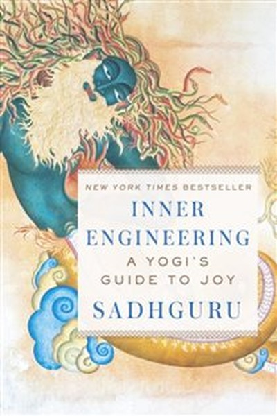
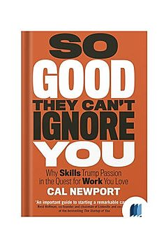
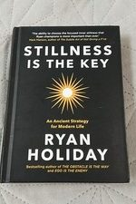
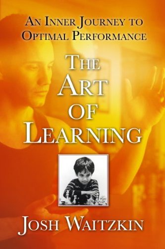

Library › Books like The Obstacle Is the Way
10 Books Like The Obstacle Is the Way That Hit the Same Nerve
You finished The Obstacle Is the Way by Ryan Holiday and want the same energy: The impediment to action advances action. What stands in the way becomes the way - through perception, action,… Here are 10 more that scratch the same itch, each with a free chapter-by-chapter breakdown, key lessons and action steps on this shelf.
 Attitude Is Everything
Your attitude is your window on the world - and success is a three-step chain: think, speak, act. Keep the window clean.
READ THE FREE BREAKDOWN →
Attitude Is Everything
Your attitude is your window on the world - and success is a three-step chain: think, speak, act. Keep the window clean.
READ THE FREE BREAKDOWN →
 India 2020
Nation-building is not a government project; it is a mission every citizen adopts through competence, integrity and work.
READ THE FREE BREAKDOWN →
India 2020
Nation-building is not a government project; it is a mission every citizen adopts through competence, integrity and work.
READ THE FREE BREAKDOWN →

Inner Engineering Sadhguru's practical yogic guide to engineering your inner world so joy becomes your default state - not a goal you chase. READ THE FREE BREAKDOWN →
So Good They Can't Ignore You Don't follow your passion - bring it with you. Build career capital through deliberate practice, then cash it in for autonomy and mission. READ THE FREE BREAKDOWN →
Stillness Is the Key Every tradition agrees on one thing: the still mind wins. Master the mental, spiritual, and physical domains - limit inputs, journal, walk, sleep, say no. READ THE FREE BREAKDOWN →
The Art of Learning The subject of Searching for Bobby Fischer mastered two unrelated arts with one method: incremental growth, smaller circles, and turning every setback into fuel. READ THE FREE BREAKDOWN →Every summary is free: lessons, examples, action steps, audio in your language.